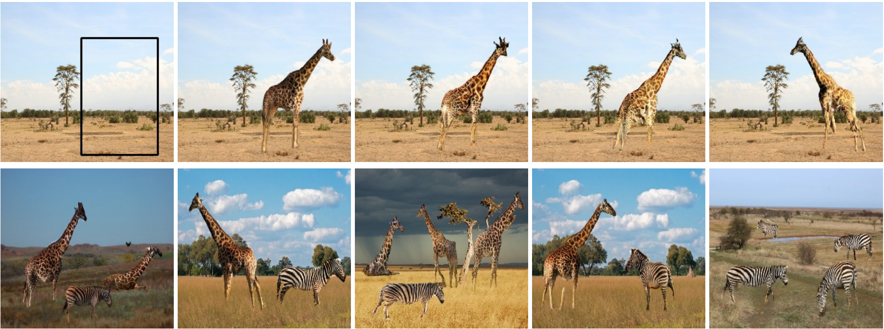

GaussiGAN Controllable Image Synthesis with 3D Gaussians from Unposed Silhouettes
British Machine Vision Conference (BMVC) + AI for Content Creation (AI4CC) @ CVPR, 2021
Abstract
We present an algorithm to reconstruct a coarse representation of objects from unposed multi-view 2D mask supervision. Our approach learns to represent object shape and pose with a set of self-supervised canonical 3D anisotropic Gaussians, via a perspective camera and a set of per-instance transforms. We show that this robustly estimates a 3D space for the camera and object, while recent state-of-the-art voxel-based baselines struggle to reconstruct either masks or textures in this setting. We show results on synthetic datasets with realistic lighting, and demonstrate an application of object insertion. This helps move towards structured representations that handle more real-world variation in learned object reconstruction.
Paper
Results
Video
GaussiGAN presentation (10 mins) at AI for Content Creation @ CVPR 2021.
Code
- GaussiGAN (model) — the TensorFlow 1 training and inference code. We train a shape model and a texture model per dynamic object from scratch (shell scripts), or run inference from pretrained weights; static objects use their own mask and texture generators. Requires CUDA 10, TensorFlow GPU 1.12, and Tensorpack, with datasets and pretrained models downloaded separately.
- GaussiGAN interactive demo (Flask) — the interactive web app for the paper. We draw a bounding box on a background image, then translate, rotate, scale, and re-depth the 3D Gaussians in the browser and press Enter to synthesise the result. Runs on Python 3.7 with TensorFlow 1.15 and Flask; a GPU is optional, as CPU-only TensorFlow works.
Citation
@inproceedings{Mejjati_2021,
series = {BMVC 2021},
title = {GaussiGAN: Controllable Image Synthesis with 3D Gaussians from Unposed Silhouettes},
url = {http://dx.doi.org/10.5244/C.35.183},
DOI = {10.5244/c.35.183},
booktitle = {Proceedings of the British Machine Vision Conference 2021},
publisher = {British Machine Vision Association},
author = {Mejjati, Youssef Alami and Milefchik, Isa and Gokaslan, Aaron K and Wang, Oliver and Kim, Kwang In and Tompkin, James},
year = {2021},
collection= {BMVC 2021}
}Generating Object Stamps Precursor in 2D
AI for Content Creation (AI4CC) @ CVPR, 2020

Abstract
We present an algorithm to generate diverse foreground objects and composite them into background images using a GAN architecture. Given an object class, a user-provided bounding box, and a background image, we first use a mask generator to create an object shape, and then use a texture generator to fill the mask such that the texture integrates with the background. By separating the problem of object insertion into these two stages, we show that our model allows us to improve the realism of diverse object generation that also agrees with the provided background image. Our results on the challenging COCO dataset show improved overall quality and diversity compared to state-of-the-art object insertion approaches.
Citation
@inproceedings{mejjati2020objectstamps,
author = {Youssef A. Mejjati and Zejiang Shen and Michael Snower and Aaron Gokaslan and Oliver Wang and James Tompkin and Kwang In Kim},
title = {Generating Object Stamps},
booktitle = {Computer Vision and Pattern Recognition Workshop on AI for Content Creation (CVPRW)},
month = {June},
year = {2020}
}The linked PDF is the full 8-page paper; the AI4CC version is a 4-page extended abstract.
Presentations
Acknowledgements
GaussiGAN: We thank Numair Khan for the dataset generator, and Helge Rhodin and Srinath Sridhar for engaging discussions. Kwang In Kim was supported by the National Research Foundation of Korea (NRF) grant NRF-2021R1A2C2012195, and we thank an Adobe gift.
Generating Object Stamps: Youssef A. Mejjati thanks the European Union's Horizon 2020 research and innovation programme under the Marie Skłodowska-Curie grant agreement No 665992, and the UK's EPSRC Centre for Doctoral Training in Digital Entertainment (CDE), EP/L016540/1. James Tompkin and Kwang In Kim thank gifts from Adobe.
Zip icon adapted from Tastic Mimetypes by Untergunter, CC BY-NC-SA 3.0 licence.